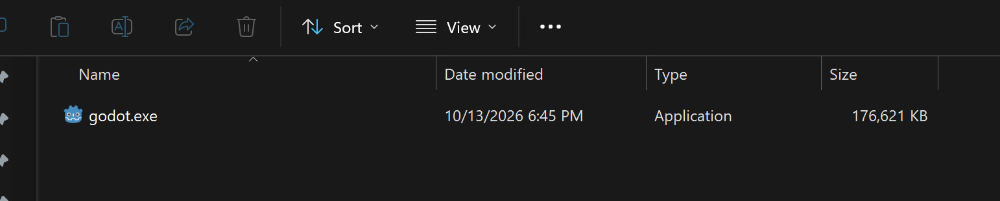
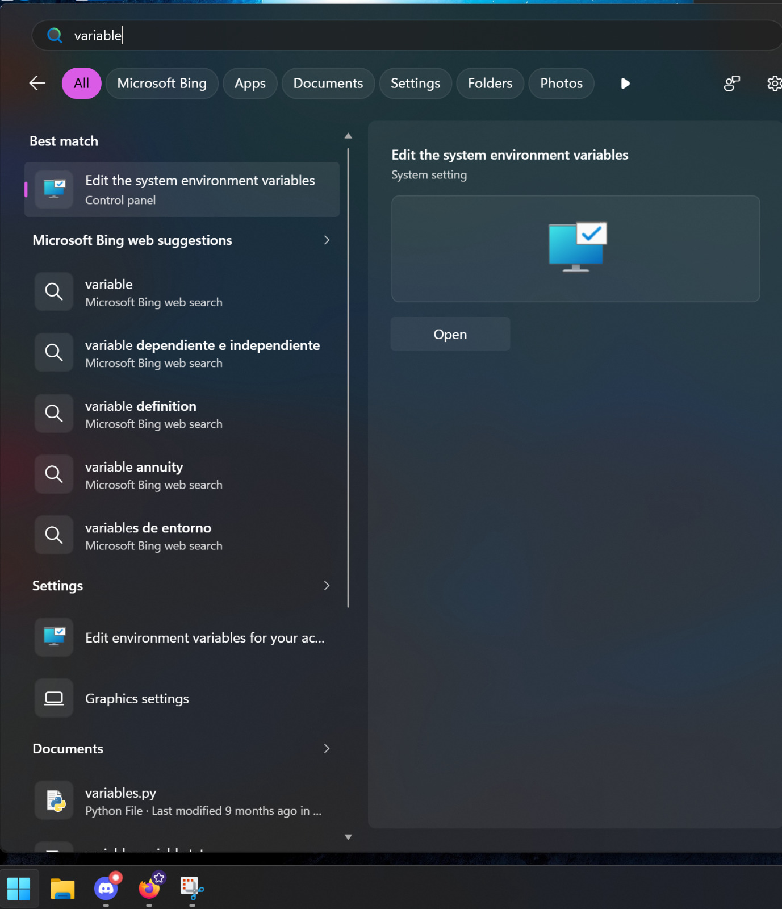
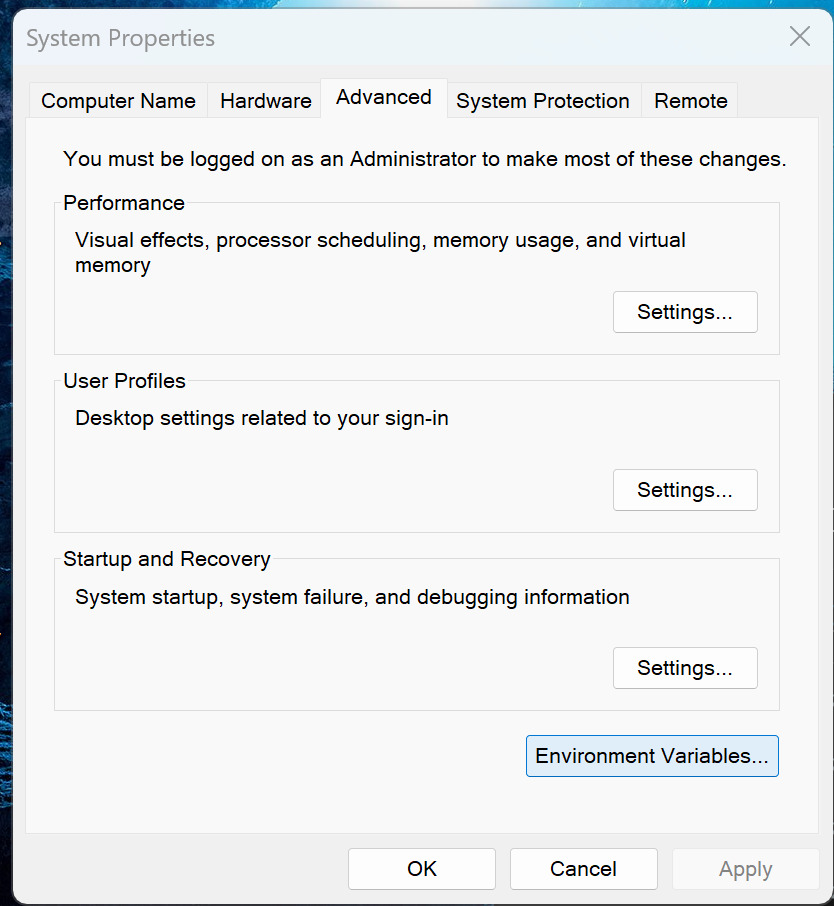
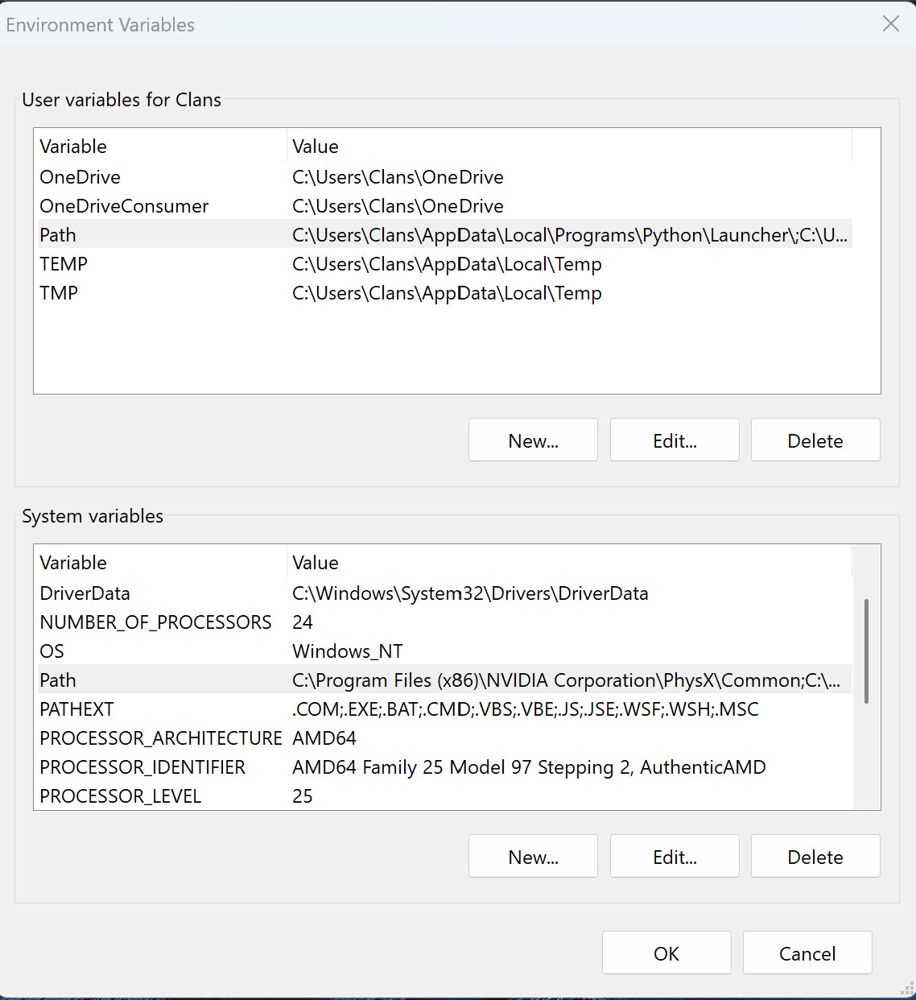
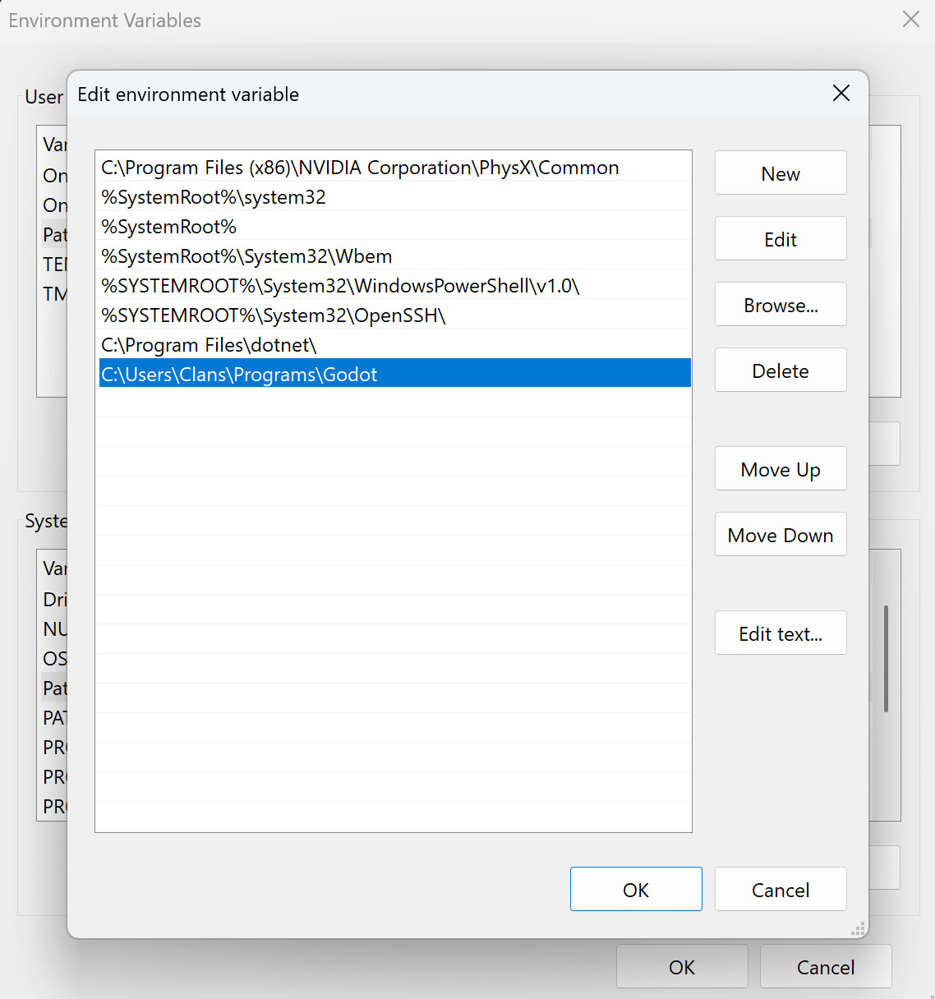
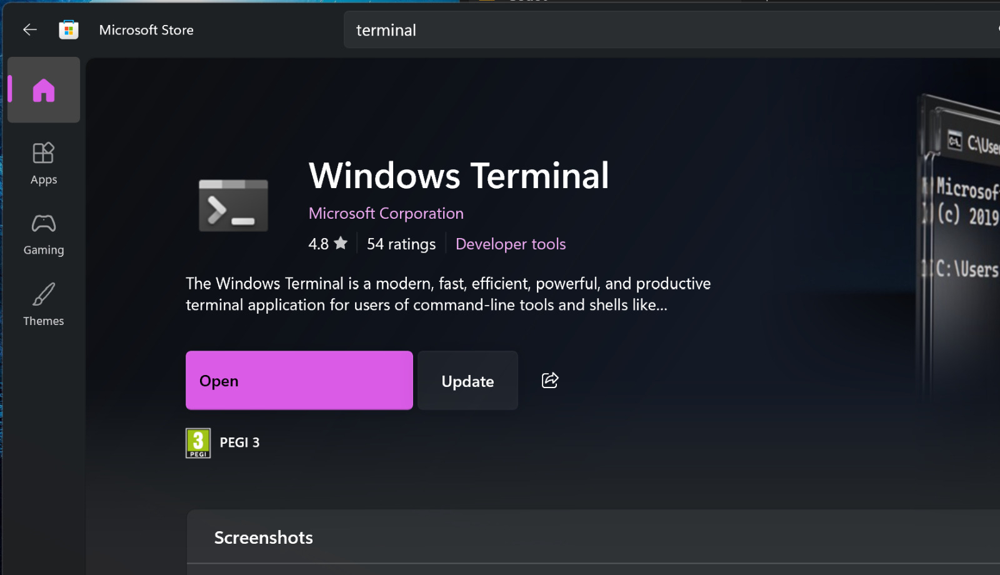
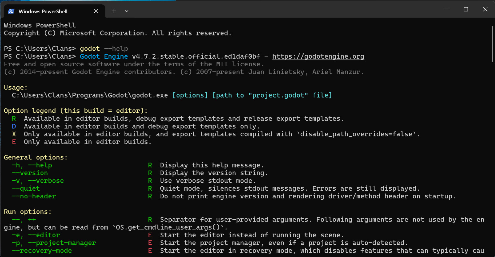

Ejecución código GDScript en Windows
Tienes windows? lo siento mucho jaja. Para ejecutar código desde la terminal necesitamos añadir la ruta a godot al PATH, una variable de entorno. No solo pasa con Godot, los estudiantes de programación en c++ les puede sonar tener que haber hecho esto si usan windows...
1. Mete Godot en una carpeta
Instala si no lo tienes, renombra el .exe a godot.exe y mételo en una carpeta donde esté él solito. Recuerda o copia la dirección a esta carpeta.

2. Abrir variables de entorno
Busca en Windows, variables de entorno o editar variables de entorno.

3. Editar variables de entorno
Abre en avanzado donde pone Variables de entorno ahí abajo.

Se abrirá el siguiente panel:

Abajo en las variables del sistema dale a editar a la variable llamada Path.
Se abrirá esta ventana:

Le damos a Nuevo y pegamos la ruta de nuestra carpeta donde tenemos Godot. No la ruta a godot.exe sino solo a la carpeta. Le damos a ok ok ok listo.
Recomendación
Una recomendación si no la teneis, es descargar una aplicación de terminal que no duelan los ojos, como el clásico cmd o powershell de Windows. Si no la tenéis, esta aplicación de terminal es oficial de Windows, y se encuentra en la Microsoft Store.

Comprobación
Si todo ha salido bien, debes ser capaz de abrir una terminal y al escribir el comando:
godot --help - te debe salir algo así:

Si lo que te sale es un error feo en rojo, entonces revisa los pasos anteriores.
Te funcioná? Tóma una galletita, esta es bien merecida -> 🍪